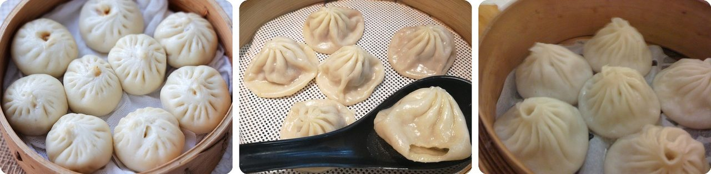
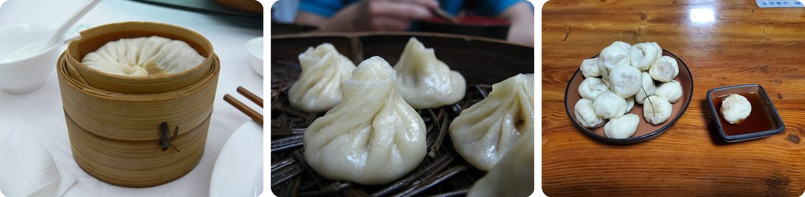
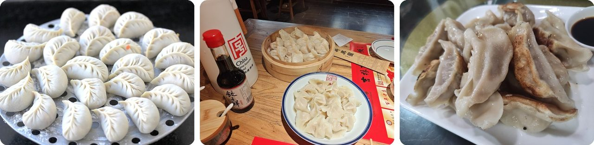
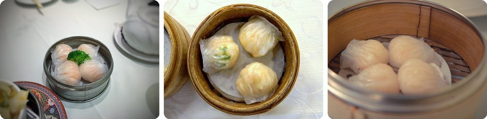
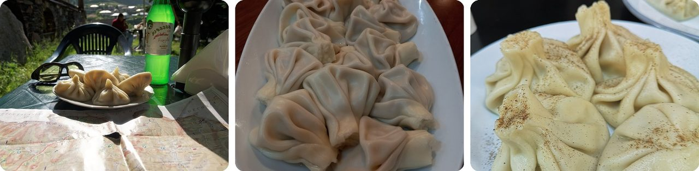
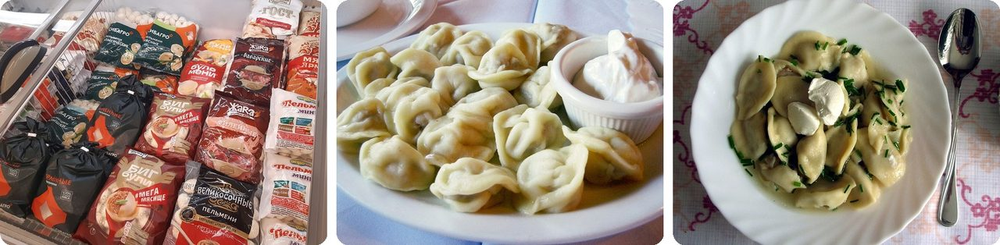
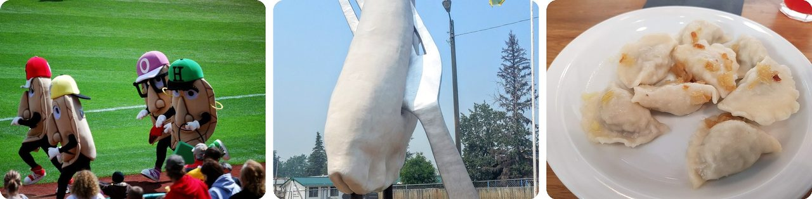
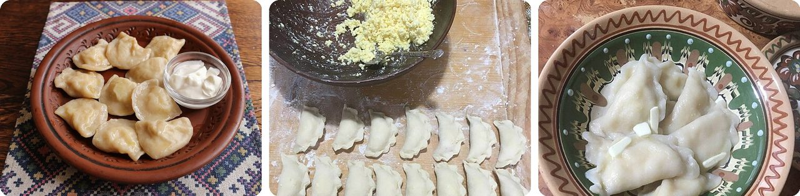
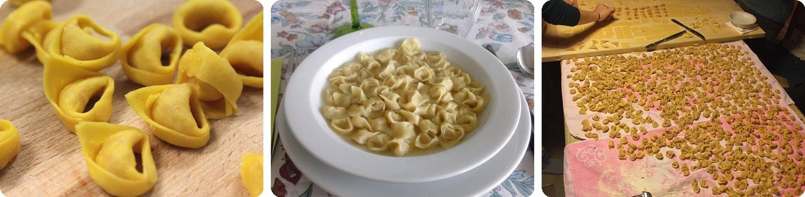

🌍 十大 世界各地的汤包和小点心
2026年11月11日
1. 🇨🇳 小笼包里的汤，是以“果冻”的样子包进去的

怎么才能把汤包进包子里，还不漏出来？答案是：根本不用倒汤。厨师会把肉馅和 肉皮冻 一起包进去，肉皮冻就是肉汤放凉以后凝成的硬硬的冻。一上蒸笼，热气就把肉冻重新化成汤，封在薄薄的皮里。这也是为什么以前夏天很难做小笼包：室温下肉冻凝不起来，有了冰箱才轻松多了。
“小笼包”这个名字，来自蒸它、端它上桌用的小竹笼。上海的小笼包来自南翔，那是一个村镇，现在已经是上海的一部分。
说白了，这是一碗变成果冻块去“旅行”的汤。
2. 🇨🇳 有些巨大的汤包，要用吸管来吃

小笼包有个大个子表哥，叫汤包。在扬州、靖江和江苏其他地方，一个汤包大到 单独占一个蒸笼。先别咬。你要插进一根吸管，把汤喝掉（汤是用猪肉冻做的，有时还加蟹黄），再吃剩下的空包子。
汤包最早出现在宋朝的都城开封，那时人们咬开包子，用勺子喝汤。1127 年开封被入侵者攻下后，汤包传到了南方。现在就连开封的大多数小店，也改卖吸管喝汤的版本了。
这就是一盒能吃掉的果汁。
3. 🇨🇳 饺子最早叫“娇耳”

传说饺子是一位叫张仲景的医生发明的，大约在 1800 年前的东汉。一年冬天他回家的路上，看到很多穷苦人的耳朵都冻伤了。于是他把羊肉、黑胡椒和一些暖身的药材一起炖，剁碎以后包进小面皮里，煮熟了，连汤一起分给病人，一直分到过年。大家学着他的做法，把这种饺子叫作 “娇耳”。
后来，长得像金元宝、银元宝（古时候当钱用的金银块）的饺子，成了新年求财的好兆头。直到今天，很多家庭还会在除夕午夜吃饺子。
你可以把它想成：长成要治的那个身体部位样子的药。
4. 🦐 点心师傅的手艺，要看一只虾饺的褶子

虾饺是一种广式鲜虾饺，皮薄得几乎能看穿。据说它就是 用来评判点心师傅手艺的那道菜。规矩可严了。至少要有 7 道褶，最好 10 道以上。皮要又薄又透，但用筷子夹起来不能破，也不能粘在纸上或者旁边的虾饺上。还得刚好一口吃下。
它是点心里的“四大天王”之一，另外三个是烧卖、叉烧包和蛋挞。
换句话说，这是一场能一口吃掉的厨师期末考试。
5. 🇯🇵 日本有一座城市，专门为饺子立了雕像
宇都宫是东京北边的一座城市，号称日本最爱吃饺子的城市。城里有 200 多家饺子店，人口大约 51.3 万，差不多每 2500 人就有一家。
这要从二战以后说起。从中国东北（当时叫“满洲”）回国的日本士兵，把饺子的做法带了回来，在城里开起了饺子店。
1990 年，市政府发现饺子这么受欢迎，就成立了饺子协会。现在火车站外有一座 1.5 米（5 英尺）高的饺子雕像，老城堡公园里每年还会办饺子节。
说白了，整座城市变成了一个饺子粉丝俱乐部。
6. 🇬🇪 在格鲁吉亚，吃辛卡利要把顶上的“小揪揪”留在盘子里

辛卡利（khinkali）是格鲁吉亚的大饺子，顶上有一个拧起来的面疙瘩。肉馅是生的包进去的，所以一煮，肉汁就被锁在里面。厨师还常常往肉馅里加温水或高汤，让它更多汁。要 用手直接拿着吃：捏住顶上的结，咬一个小口，先把汤汁吸掉，再吃剩下的。用叉子会被认为不对，或者很孩子气，因为叉子一戳，汤就流出来了。
那个结叫 k'udi（“尾巴”），太硬了，不能吃。你把它放在盘子里，堆起来的结就能告诉大家你吃了几个。
你可以把它想成：一个会帮你记分的饺子。
7. 🇷🇺 “佩尔梅尼”的意思是“耳朵面包”

佩尔梅尼（pelmeni，俄式饺子）这个名字来自俄罗斯的科米语和乌德穆尔特语，pel'n'an' 的意思是 “耳朵面包”，因为它们长得像耳朵。在西伯利亚，人们冬天把饺子放在屋外冻起来，用来储存食物。去森林里打猎的人，会背上整袋整袋的冻饺子，因为它们放得久，煮得也快。
现在超市卖的俄式饺子，每个大约 15 克，差不多是一汤匙糖的重量。它们长得太像大号的意大利饺子（tortellini）了，所以工厂常常用意大利的意面机来做。
换句话说，西伯利亚的冬天就是最早的冷冻柜。
8. 🇵🇱 波兰饺子有自己的守护圣人

在波兰，圣雅钦（圣海辛斯）和波兰饺子（pierogi）连在一起，有一种说法是他在 13 世纪把饺子带到了波兰。他的外号还变成了一句口头禅：“Święty Jacek z pierogami!”（“圣雅钦和他的饺子！”）是波兰人的一句老话，意思差不多是“我的天哪！”来自中欧和东欧的移民把波兰饺子带到了北美。匹兹堡海盗队每场主场棒球赛，局间都会有六个穿着巨型饺子服装的人赛跑。
在加拿大艾伯塔省的格伦登村，有一座插在叉子上的波兰饺子雕像，高 7.6 米（25 英尺），差不多有两层楼那么高。
这是一个有圣人、有赛跑队，还有自己巨型雕像的饺子。
9. 🇺🇦 乌克兰用雪堆了一个大饺子

瓦列尼基（varenyky）是乌克兰的半月形饺子，馅可以是土豆、奶渣、白菜或者酸樱桃。圣诞夜，很多家庭会 在其中一个饺子里藏一枚硬币。谁吃到它，据说新的一年就会有好运和钱。乌克兰人太爱它了，滑雪小镇布科韦利每年都办瓦列尼基节。2013 年，那里用雪堆了一个巨大的饺子，报给了吉尼斯世界纪录，说它是世界上最大的雪饺子。
在切尔卡瑟市，有一座 2006 年立的雕像：民间英雄哥萨克马迈正从陶罐里吃饺子，身后还有一个巨大的饺子。
这就是一个雪人，只不过它是个饺子。
10. 🇮🇹 传说意大利饺子是照着女神的肚脐做的

博洛尼亚和摩德纳这两座意大利城市，都说意大利饺子（tortellini）是自己发明的。一个 19 世纪的传说两边都照顾到了：在正好位于两城之间的卡斯泰尔弗兰科-艾米利亚小镇，女神维纳斯住进了一家旅店。旅店老板从钥匙孔往里偷看，只能看到 她的肚脐。他被她的美迷住了，就做出了这个形状的意面。所以意大利饺子有时也叫“维纳斯的肚脐”，小镇至今每年都为这个传说办节庆。
一个意大利饺子只有大约 2 克，比一块方糖还轻。大一号的 tortelloni 大约 5 克。
意大利人最爱的小意面，是一个能泡在汤里吃的爱情故事。
趣闻
考古学家在中国最西边的吐鲁番，从唐朝的墓里发现了一碗饺子。那里出土的饺子和馄饨属于 7 世纪或 8 世纪，已经有 1200 多年了。考古学家找到的真正的古代食物，从墓里的饺子到古老的面包，是一个值得接着探索的新世界。
图片来源（Wikimedia Commons）
- #1: Xiaolongbao-breakfast.jpg by Darrylsnow, CC BY-SA 4.0
- #1: Xiaolongbao Shanghai.jpg by Robigasp, CC BY-SA 4.0
- #1: Xiaolongbao (4238848098).jpg by kyle tsui from Washington, DC, USA, CC BY 2.0
- #2: 扬州富春茶社汤包.JPG by Gisling, CC BY-SA 3.0
- #2: 南京鸡汁汤包 (5811394807).jpg by Caitriana Nicholson from 北京 ~ Beijing, 中国 ~ China, CC BY-SA 2.0
- #2: 2023-07-08 湖州松毛汤包.jpg by 源義信, CC BY-SA 4.0
- #3: Jiaozi GS CN.jpg by Emcc83, CC BY-SA 4.0
- #3: Zhengjiao and Zhujiao at Xinxingyuan Jiaozi Restaurant in Changchun 20260321.jpg by JacobLyu, CC BY-SA 4.0
- #3: Jiaozi - Mindou 1.jpg by Francesc Fort, CC BY-SA 4.0
- #4: Har gow (27871753892).jpg by T.Tseng, CC BY 2.0
- #4: 3 pieces of har gow at Plum Blossom Room 20230125.jpg by Solomon203, CC BY-SA 4.0
- #4: Har Gow (flickr) by joo0ey, CC BY 2.0
- #5: Utsunomiya Venus.jpg by Fred Cherrygarden, CC BY-SA 4.0
- #5: Gyōza 005.jpg by Ocdp, CC0
- #5: Utsunomiya Gyoza Festival 2022.jpg by Miyuki Meinaka, CC BY-SA 4.0
- #6: Kazbegi, Khinkali, Georgia.jpg by Vyacheslav Argenberg, CC BY 4.0
- #6: Khinkali - Traditional Georgian food.jpg by Helen Owl, CC BY-SA 4.0
- #6: Khinkali mixed.jpg by Chemipanda, CC BY-SA 4.0
- #7: Pelmeni, Novosibirsk 02.jpg by К.Артём.1, CC BY-SA 4.0
- #7: Pelmeni Russian.jpg by Eugene Kim @ Flickr, CC BY 2.0
- #7: Pelmeni.jpg by Bernd Hutschenreuther, CC BY-SA 3.0
- #8: Great Pittsburgh Pierogy Race of 9 May 2010.jpg by Christopher Amrich, CC BY-SA 2.0
- #8: World's Largest Perogy.jpg by Paul Swabey, CC BY-SA 4.0
- #8: 2019-07-06 Pierogi ruskie.jpg by Maksym Kozlenko, CC BY-SA 4.0
- #9: Varenyky with Potatoes - 2026 -01.jpg by DemieK07, CC BY-SA 4.0
- #9: 15. varenyky with cheese - fill and seal.jpg by Валентина Тимків, CC BY-SA 4.0
- #9: 20. varenyky with cheese - add butter.jpg by Валентина Тимків, CC BY-SA 4.0
- #10: Tortellini Bolognesi.jpg by Angelo.Muratore, CC BY-SA 4.0
- #10: Tortellini in brodo - Bologna.jpg by Desyman, CC BY-SA 4.0
- #10: Making tortellini.jpg by Wittylama, CC BY-SA 4.0


.jpg){kind=link}

.jpg){kind=link}


.jpg){kind=link}